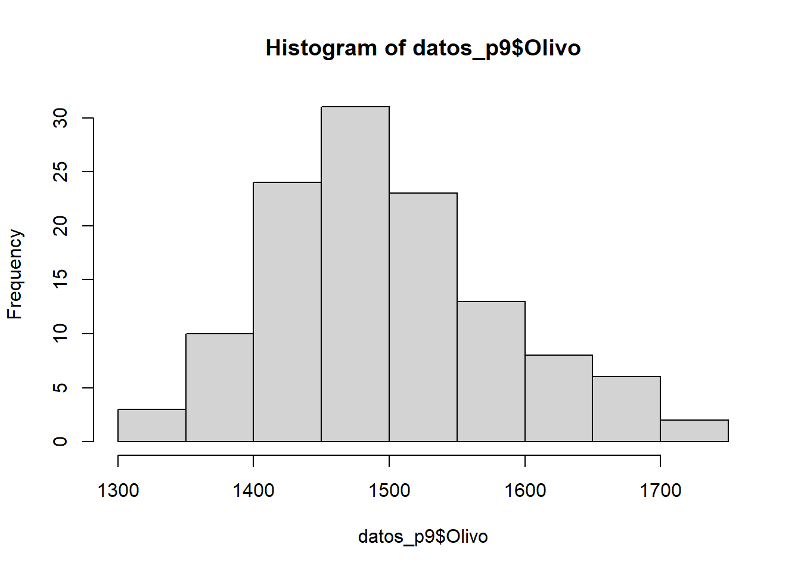
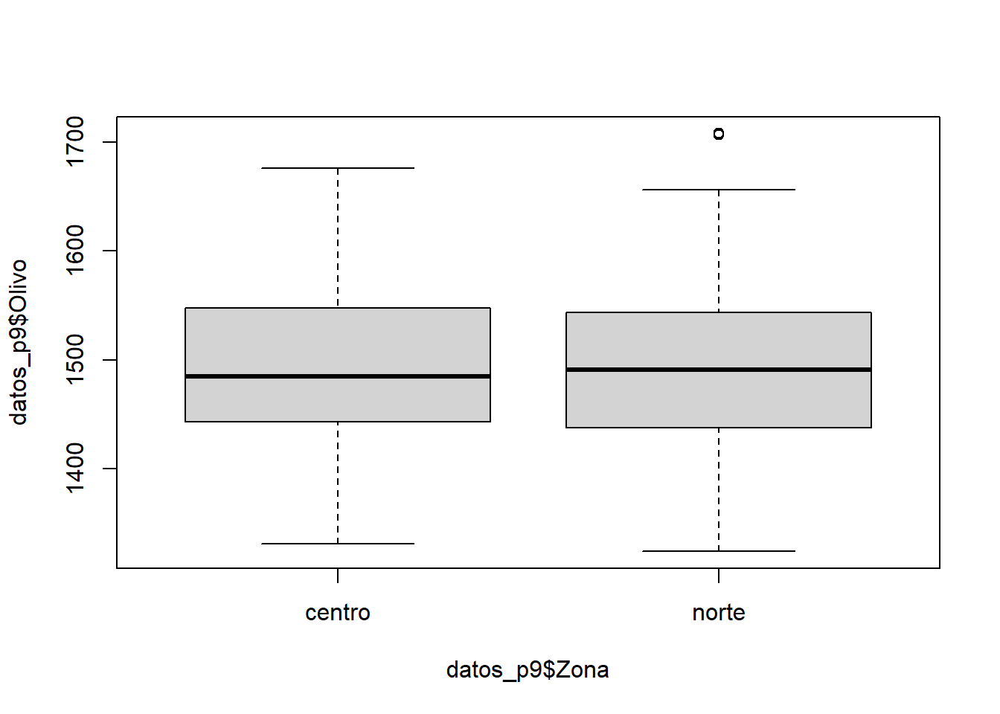
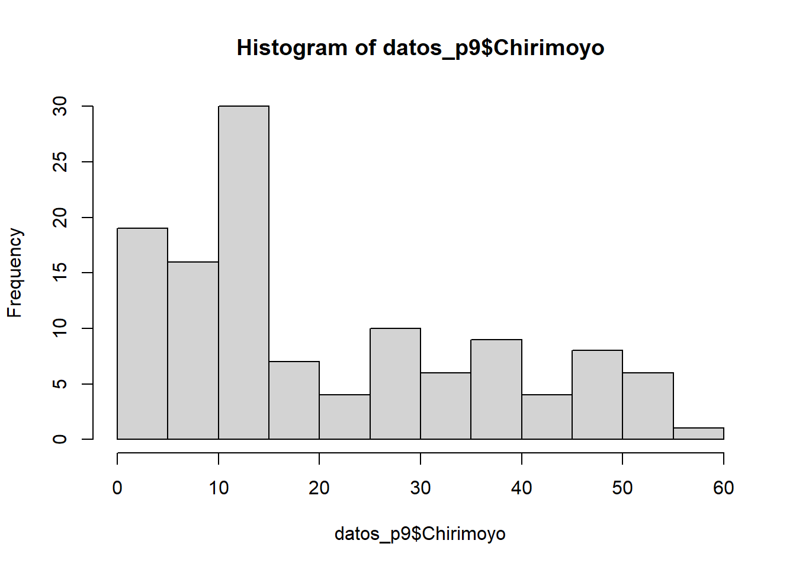

Capitulo 8 Prueba de t (Compración paramétrica entre dos grupos)
Uno de los análisis estadísticos más comunes es la prueba de t, la cual se utiliza para comparar la media de dos muestras dadas. Una prueba t se utiliza cuando no se conocen los parámetros de la población (media y desviación estándar).
La prueba t te dice cuán significativas son las diferencias entre los grupos, es decir, permite saber si esas diferencias (medidas en medias / promedios) podrían haber ocurrido por casualidad.
Hay tres versiones de prueba t
Prueba t de muestras independientes que compara la media de dos grupos
Prueba t de muestra pareada que compara medias del mismo grupo en diferentes momentos Ejemplo:
Una prueba t de muestra que prueba la media de un solo grupo contra una media conocida.
El estadístico para esta prueba de hipótesis se denomina estadístico t y se calcula como:
\[ t=\frac{(x_1 - x_2)}{\frac{σ}{\sqrt{n_1}} + \frac{σ}{\sqrt{n_2}}} \\ \]
donde: \(x_1\): es la media de muestra 1
\(x_2\): es la media de la muestra 2
\(\sigma /\sqrt{n_1} + \sigma /\sqrt{n_2}\): es el error estandar de la diferencia de medias
Recuerden que este método nos permite examinar la relación entre una variable numérica y una variable explicativa categórica
En el siguiente laboratorio veremos 2 ejemplos para muestras independientes
8.1 Ejemplo 1: Prueba de t para muestras independientes de diferentes variedades (ejeplo de libro)
8.1.1 Creemos nuestros datos
ara ilustrar el uso de la prueba t, considere la muestra de seis rendimientos de una nueva variedad de trigo. Los rendimientos obtenidos fueron: 2.5, 2.1, 2.4, 2.0, 2.6 y 2.2 toneladas por hectárea. Suponga que, además de sus seis estimaciones de rendimiento con la nueva variedad, el agricultor tiene diez áreas similares con su variedad estándar con los siguientes rendimientos: 2.2, 1.9, 1.8, 2.1, 2.1, 1.7 también en toneladas por hectárea.
Para este ejemplo asumiremos que se cumplen las condiciones para efectuar un análisis parámetrico (Normalidad, Hemoscedasticidad, Independencia)
8.1.2 Analicemos nuestros datos
Veamos un resumen de nuestros datos
## -- Attaching packages -------- tidyverse 1.2.1 --## v ggplot2 3.3.1 v purrr 0.3.4
## v tibble 2.1.3 v dplyr 0.8.3
## v tidyr 1.1.0 v stringr 1.4.0
## v readr 1.3.1 v forcats 0.4.0## Warning: package 'ggplot2' was built under R version 3.6.3## Warning: package 'tidyr' was built under R version 3.6.3## Warning: package 'purrr' was built under R version 3.6.3## -- Conflicts ----------- tidyverse_conflicts() --
## x dplyr::filter() masks stats::filter()
## x dplyr::lag() masks stats::lag()## rendimiento variedad
## Min. :1.700 var1:6
## 1st Qu.:1.975 var2:6
## Median :2.100
## Mean :2.133
## 3rd Qu.:2.250
## Max. :2.600## # A tibble: 2 x 2
## variedad rendimiento_promedio
## <fct> <dbl>
## 1 var1 2.3
## 2 var2 1.978.1.3 Expresar la hipótesis de investigación
Ahora realicemos una prueba de hipótesis. Queremos saber si los rendimientos son significativamente diferentes entre sí. ¿Cómo escribiríamos nuestras hipótesis?
\[ H_0: \text{Las medias de dos grupos son iguales} \\ H_a: \text{Las medias de dos grupos NO son iguales} \\ o \\ H_0: \mu_1 = \mu_2 \\ H_a: \mu_1 \neq \mu_2 \\ \]
8.1.4 Realicemos nuestra prueba de t
Ahora analicemos nuestros datos a través de la prueba de t
##
## Welch Two Sample t-test
##
## data: rendimiento by variedad
## t = 2.6537, df = 9.6756, p-value = 0.0248
## alternative hypothesis: true difference in means is not equal to 0
## 95 percent confidence interval:
## 0.05218059 0.61448608
## sample estimates:
## mean in group var1 mean in group var2
## 2.300000 1.966667Nuestra prueba estadística fue de 2.6537 con un p-value de 0.0248
8.1.5 Conclusión del test
Ya que nuestro valor de probabilidad (p-value) es menor a 0.05 se rechaza la hipotesis nula. Por lo tanto, encontramos que los datos de nuestro modelo proporcionan evidencia estadísticamente significativa para sugerir que la media de los rendimientos de ambas variedades no son iguales.
8.2 Ejemplo 2: Superficie de cultivos por zonas (Cuando las condiciones se cumplen y no se cumplen)
8.2.1 Importemos nuestros datos
En este práctico comenzaremos a trabajar con una nueva base de datos que incluye las siguientes variables:
Zona: Se refiere a zonas geográficas de nuestro país.
Region: Se refiere a divisiones territoriales oficiales de nuestro país.
Temporada: Año en que se realizan las mediciones.
Olivo: Superficie de territorio plantada con Olivos. Medida en hectáreas.
Chirimoyo: Superficie de territorio plantada con Chirimoyos. Medida en hectáreas
Vid: Superficie de territorio plantada con Vid de mesa. Medida en hectáreas.
Temperatura: Temperatura promedio anual en los puntos de muestreos. Medida en ºC.
8.2.2 Analicemos nuestros datos (Cuando las condiciones se cumplen)
8.2.2.1 Normalidad
######Método visual: Histograma de frecuencia
Graficar un histograma de la variable de interés nos dará una idea de la forma de la distribución que siguen nuestros datos. Recordemos que la distribución normal alcanza su punto máximo en el medio y es simétrica respecto a la media. No es necesario que los datos se distribuyan de manera perfectamente normal para que las pruebas sean confiables.

Nuestro análisis visual sugiere que los datos del número de hectáreas plantadas con olivos siguen una distribución normal. Sin embargo, esto no se cumple para el número de hectáreas plantadas con chirimoyos.
A pesar de ser informativo, el análisis visual es subjetivo porque dependemos de la interpretación de los gráficos. Una alternativa objetiva es el uso de análisis estadísticos basados en contrastes de hipótesis
8.2.2.1.1 Pruebas estadísticas: Test de Shapiro-Wilk
En estadística, el test de Shapiro–Wilk se usa para contrastar la normalidad de un conjunto de datos. Se pondrán a prueba las siguientes hipótesis:
\[ H_0 = \text{Los datos provienen de una distribución normal}\\ H_A = \text{Los datos NO provienen de una distribución normal} \]
Recuerden si el valor de probabilidad es mayor a 0.05, no rechazamos la hipótesis nula y asumimos que los datos provienen de una distribución normal.
##
## Shapiro-Wilk normality test
##
## data: datos_p9$Olivo
## W = 0.98212, p-value = 0.112El valor de probabilidad (p>0.05) asociado a nuestro análisis sugiere que los datos del número de hectáreas plantadas con olivos siguen una distribución normal.
8.2.2.2 Homocedasticidad
Visualizar un gráfico de cajas de la variable de interés nos dará una idea de la dispersión de los datos en torno a una medida de tendencia central. Para ello podemos considerar el tamaño de los bigotes de nuestro gráfico de cajas.

Nuestro análisis visual muestra que los datos del número de hectáreas plantadas con olivos presentan niveles similares de dispersión entorno a la mediana.
Otra opción es comparar directamente los valores de las varianza entre los grupos de interés. Para ello utilizaremos la función tapply:
## centro norte
## 6797.021 7222.925Los valores muestran que la varianza del número de hectáreas plantadas con olivos es 6% mayor en plantaciones de la zona norte en comparación a la zona sur.
A pesar de ser informativo, el análisis visual es subjetivo porque dependemos de la interpretación de los gráficos. Una alternativa objetiva es el uso de pruebas estadísticas basadas en contraste de hipótesis.
8.2.2.2.1 Pruebas estadísticas: Test Levene
En estadística, el test de Shapiro–Wilk se usa para evaluar la igualdad de las varianzas (homocedasticidad) para una variable calculada para dos o más grupos. Se pondrán a prueba las siguientes hipótesis:
\[ H_0 = \text{Las varianzas poblacionales de los grupos son iguales} \\ H_A = \text{Las varianzas poblacionales de los grupos NO son iguales} \]
Recuerden que el p-value asociado al análisis nos permitirá rechazar (p < 0.05) o no (p > 0.05) nuestra hipótesis nula.
Recuerden que la función leveneTest es parte de la librería car. Es por ello que necesitamos instalar y cargar esta librería antes de hacer el análisis.
## Loading required package: carData##
## Attaching package: 'car'## The following object is masked from 'package:dplyr':
##
## recode## The following object is masked from 'package:purrr':
##
## some## Levene's Test for Homogeneity of Variance (center = median)
## Df F value Pr(>F)
## group 1 0.0169 0.8969
## 118El valor de probabilidad (p>0.05) asociado a nuestro análisis sugiere que las varianzas poblacionales del número de hectáreas plantadas con olivos son estadísticamente iguales para las muestras de la zona norte y central.
Dado que nuestra variable número de hectáreas plantadas con olivos cumple con los supuestos de normalidad y homocedasticidad, podemos aplicar métodos estadísticos paramétricos sobre ella.
8.2.3 Expresar la hipótesis de investigación
Pongamos ahora a prueba si existen diferencias en el número de hectáreas plantadas con olivos entre la zona norte y la zona central. Podemos hacerlo con una prueba de t si y solo si se cumplen los supuestos de normalidad de homogeneidad de varianza.
\[ H_0: \text{Las medias en el número de hectáreas en ambas zonas son iguales} \\ H_a: \text{Las medias en el número de hectáreas en ambas zonas NO son iguales.} \\ \]
8.2.4 Realicemos nuestra prueba de t
Ahora analicemos nuestros datos a través de la prueba de t
##
## Welch Two Sample t-test
##
## data: Olivo by Zona
## t = -0.15777, df = 117.89, p-value = 0.8749
## alternative hypothesis: true difference in means is not equal to 0
## 95 percent confidence interval:
## -32.68265 27.85932
## sample estimates:
## mean in group centro mean in group norte
## 1497.470 1499.8828.2.5 Conclusión del test
No hemos detectado diferencias estadísticamente significativas en el número de hectáreas plantadas con olivos entre la zona norte y la zona central. (t= -0.1577, P = 0.87), con un promedio de 1499±7222 hectáreas plantadas en la zona norte y un promedio de 1497±6797 hectáreas plantadas en la zona centro (promedio ± desvest).
8.2.6 Analicemos nuestros datos (Cuando las condiciones NO se cumplen)
8.2.6.1 Normalidad
######Método visual: Histograma de frecuencia

La distribución normal no se cumple para las hectáreas plantadas con chirimoyos
8.2.7 Prueba de Mann-Whitney (comparación no-paramétrica entre dos grupos)
El test de Mann–Whitney, también conocido como Wilcoxon rank-sum test, es una prueba estadística no paramétrica que contrasta si dos muestras proceden de poblaciones equidistribuidas. Esta prueba estadística se fundamenta en que si las dos muestras comparadas proceden de la misma población, al juntar todas las observaciones y ordenarlas de menor a mayor, cabría esperar que las observaciones de una y otra muestra estuviesen intercaladas aleatoriamente. Por lo contrario, si una de las muestras pertenece a una población con valores mayores o menores que la otra población, al ordenar las observaciones estas tenderán a agruparse de modo que las de una muestra queden por encima de las de la otra.
8.2.8 Expresar la hipótesis de investigación
En este análisis se ponen a prueba las siguientes hipótesis:
\[ H_0: \text{La probabilidad de que una observación de la población X supere a una observación de la población Y es igual a la probabilidad de que una observación de la población Y supere a una de la población X}\\ H_A: \text{La probabilidad de que una observación de la población X supere a una observación de la población Y NO es igual a la probabilidad de que una observación de la población Y supere a una de la población X} \]
8.2.9 Realicemos nuestra prueba de Mann-Whitney
La función wilcox.test está disponible en R para realizar una prueba de Mann-Whitney.
Pongamos ahora a prueba si existen diferencias en el número de hectáreas plantadas con chirimoyos entre la zona norte y la zona central.
##
## Wilcoxon rank sum test with continuity correction
##
## data: datos_p9$Chirimoyo by datos_p9$Zona
## W = 993.5, p-value = 2.33e-05
## alternative hypothesis: true location shift is not equal to 08.2.10 Conclusión del test
Los resultados se explican y reportan de la siguiente forma, existen diferencias estadísticamente significativas en el número de hectáreas plantadas con chirimoyos entre la zona norte y la zona central. (W=993.5, p<0.05).